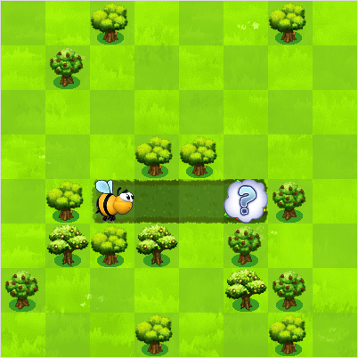
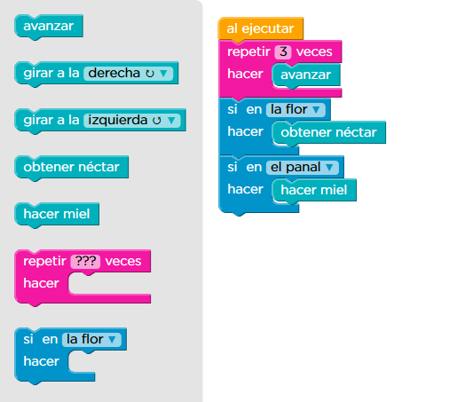

Tutorials de codi¶
Code.org és una pàgina que té diversos tutorials per aprendre a programar, des d’un nivell d’educació infantil fins als darrers cursos de secundària. Els cursos i els tutorials tenen problemes que s’han de resoldre programant la solució amb blocs.
{kind=link}


El lloc web us permet realitzar els exercicis sense registrar -vos. En el cas de voler registrar-se, la pàgina només demana un correu electrònic, que no ha de ser real, i els resultats es guardaran d’una sessió a una altra.
Cursos de codi¶
Llista de cursos llargs per aprendre a programar. Cadascuna de les etapes té un temps aproximat de 40 minuts.
** Cursos moderns **
| Direcció | Edats | Etapes i exercicis |
|---|---|---|
| Curs C | De 6 a 10 anys | 10 etapes amb 111 exercicis. |
| Curs D | De 7 a 11 anys | 12 etapes amb 139 exercicis. |
| Curs e | De 8 a 12 anys | 11 etapes amb 130 exercicis i projecte final. |
| Curs F | De 9 a 13 anys | 14 etapes amb 104 exercicis i projecte final. |
| Curs ràpid | De 9 a 18 anys | 27 etapes llargues amb 318 exercicis i projectes. |
** Cursos clàssics **
| Direcció | Edats | Etapes i exercicis |
|---|---|---|
| Curs 2 | Més de 8 anys | 11 etapes llargues amb 139 exercicis. |
| Curs 3 | Més de 9 anys | 14 etapes llargues amb 158 exercicis. |
| Curs 4 | De 9 a 14 anys | 16 etapes llargues amb 161 exercicis. |
| Curs accelerat | 13 anys i més. | 9 etapes llargues amb 98 exercicis. |
Temps de codi¶
Hora del código son pequeños tutoriales temáticos que se pueden realizar en menos de una hora.
| Nombre | Direcció | Exercicis |
|---|---|---|
| 1 | Festa de ball <https://studio.code.org/s/dance/stage/1/puzzle/1> `` ` | 13 |
| 2 | 'Segueix ballant! <https://studio.code.org/s/dance-extras-2019/stage/1/puzzle/2> `` `` `` | 9 |
| 3 | Minecraft Aquatic Trip | 12 |
| 4 | Minecraft Hero's Trip __ | 12 |
| 5 | `Minecraft Adventurer <https://studio.code.org/s/mc/less/1/levels/1> | 14 |
| 6 | Minecraft Designer <https://studio.code.org/s/minecraft/stage/1/puzzle/1> __ | 12 |
| 7 | Codi Flappy | 10 |
| 8 | Hola Mundo | 11 |
| 9 | Computar-ho | 60 |
| 10 | Poem Art __ | 9 |
| 11 | Ai per als oceans <https://studio.code.org/s/oceans/lessons/1/levels/1> `` ` | 8 |
| 12 | Labyrinth Angry Birds | 20 |
| 13 | Star Wars __ | 15 |
| 14 | Frozen <https://studio.code.org/s/frozen/lesons/1/levels/1> `` `` | 20 |
| 15 | Simulador Epidemias | 10 |
| 16 | Artista <https://studio.code.org/s/artist/less/1/levels/1> `` ` | 10 |
| 17 | Joc de bàsquet <https://studio.code.org/s/basketball/lessons/1/levels/1> __ | 8 |
| 18 | Joc multiide <https://studio.code.org/s/sports/less/1/levels/1> `` ` | 8 |
| 19 | Laboratori de jocs clàssics <https://studio.code.org/s/playlab/lessons/1/levels/1> `` ` | 10 |
| 20 | `Laboratori de jocs de glaç | 11 |
| 21 | Disney Games Laboratory | 10 |
| 22 | Gumball Games Laboratory | 11 |
Més exercicis de temps de codi <https://code.org/learn>`__
Laboratori d'aplicacions¶
Els laboratoris de programació d'aplicacions permeten aplicacions de telèfons intel·ligents en llenguatge Java.